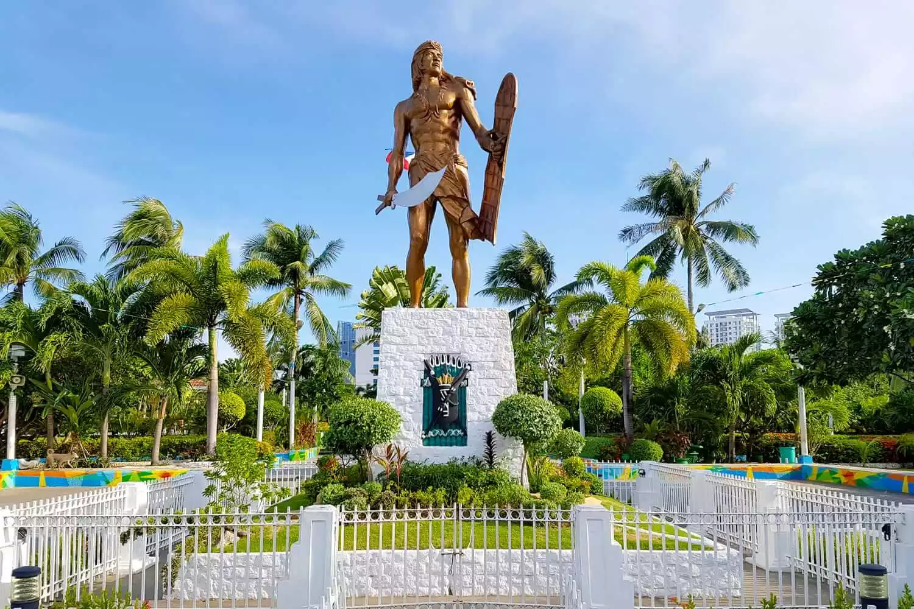

C E B U

Cebu is a province of the Philippines, in the country’s Central Visayas region, comprising Cebu Island and more than 150 smaller surrounding islands and islets. Its prosperous port capital, Cebu City, retains landmarks from its 16th-century Spanish colonial past, including the Basilica Minore del Santo Niño church and triangular Fort San Pedro. Tops, an observation deck on Mt. Busay, has sweeping views over the city.
Cebu (/sɛˈbuː/; Cebuano: Sugbo), officially the Province of Cebu (Cebuano: Lalawigan sa Sugbo; Tagalog: Lalawigan ng Cebu; Hiligaynon: Kapuroan sang Sugbo), is a province of the Philippines located in the Central Visayas (Region VII) region, and consists of a main island and 167 surrounding islands and islets. Its capital and largest city is Cebu City, nicknamed "the Queen City of the South", the oldest city and first capital of the Philippines, which is politically independent from the provincial government.
The Cebu Metropolitan Area or Metro Cebu is the second largest metropolitan area in the Philippines (after Metro Manila) with Cebu City as the main center of commerce, trade, education and industry in the Visayas. Being one of the most developed provinces in the Philippines, in a decade it has transformed into a global hub for business processing services, tourism, shipping, furniture-making, and heavy industry. Mactan–Cebu International Airport, located on Mactan Island, is the second busiest airport in the Philippines.